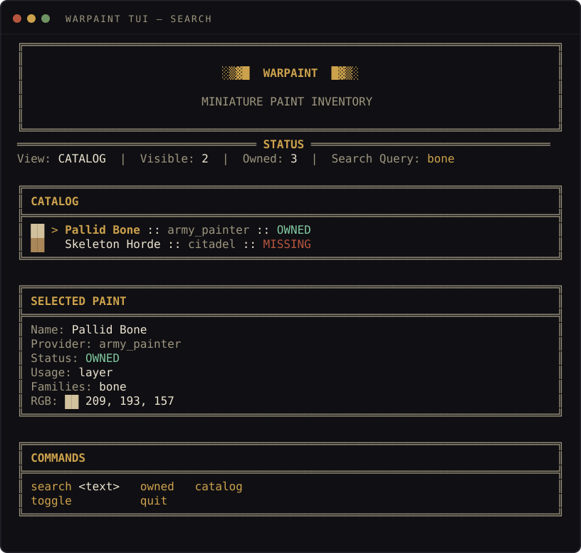
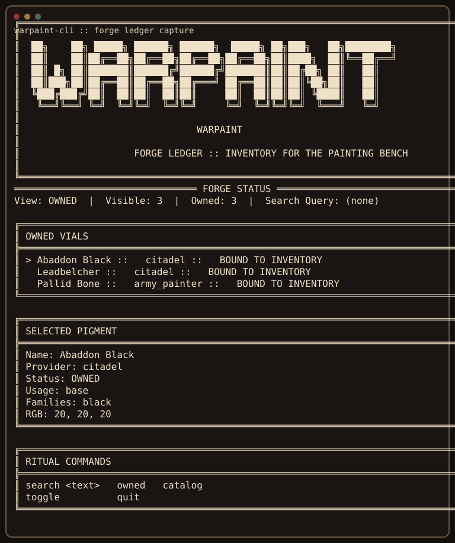
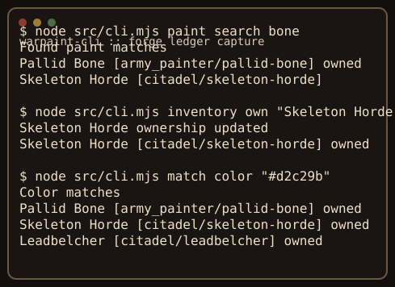

Owned-first matching
Lookups and recommendations prioritize paints already bound to your inventory before suggesting alternatives.
╔══════════════════════════════════════════════════════════════════════════════╗ ║ ║ ║ ██╗ ██╗ █████╗ ██████╗ ██████╗ █████╗ ██╗███╗ ██╗████████╗ ║ ║ ██║ ██║██╔══██╗██╔══██╗██╔══██╗██╔══██╗██║████╗ ██║╚══██╔══╝ ║ ║ ██║ █╗ ██║███████║██████╔╝██████╔╝███████║██║██╔██╗ ██║ ██║ ║ ║ ██║███╗██║██╔══██║██╔══██╗██╔═══╝ ██╔══██║██║██║╚██╗██║ ██║ ║ ║ ╚███╔███╔╝██║ ██║██║ ██║██║ ██║ ██║██║██║ ╚████║ ██║ ║ ║ ╚══╝╚══╝ ╚═╝ ╚═╝╚═╝ ╚═╝╚═╝ ╚═╝ ╚═╝╚═╝╚═╝ ╚═══╝ ╚═╝ ║ ║ ║ ║ WARPAINT ║ ║ ║ ║ FORGE LEDGER :: INVENTORY FOR THE PAINTING BENCH ║ ║ ║ ╚══════════════════════════════════════════════════════════════════════════════╝
Forge Ledger for the painting bench.
Most paint-advice workflows break at the same point: they recommend paints you do not have on hand.
warpaint-cli is a local-first paint registry built to fix exactly that — keep a deterministic
record of what is in your rack, search it by name, role, family, and approximate color, and prepare a stable
inventory foundation for AI tools that should reason from your actual shelf first.
The long-term goal isn't "AI picks random colors for miniatures." It's "AI reasons from your actual inventory first, then suggests stronger alternatives only when useful."
Lookups and recommendations prioritize paints already bound to your inventory before suggesting alternatives.
Everything lives in a project-local .warpaint/registry.json. No cloud, no account, no telemetry.
Approximate RGB values back nearest-color matching, so match color "#d2c29b" returns useful pigments.
A terminal UI styled as a workshop ledger: heavy ASCII frames, bold banners, paint data presented as inventory.
Deterministic --json output on every command, designed to be wired into future AI workflows.
Drop-in MCP endpoint exposes search, inspect, ownership, and color-match tools to Claude Desktop.
Captured from the live TUI. Reproduce locally with npm run generate:demo.


bone

# initialize the local registry $ node src/cli.mjs catalog sync # search paints $ node src/cli.mjs paint search black $ node src/cli.mjs paint search bone --json # inspect one paint $ node src/cli.mjs paint show "Abaddon Black" --json # mark paints as owned or missing $ node src/cli.mjs inventory own "Abaddon Black" $ node src/cli.mjs inventory unown "Abaddon Black" $ node src/cli.mjs inventory list # semantic and color matching $ node src/cli.mjs match describe bone $ node src/cli.mjs match color "#d2c29b" # launch the forge ledger TUI $ node src/cli.mjs tui
warpaint-cli ships a local MCP server so Claude Desktop can read and update your paint registry directly.
Drop this into your local MCP config:
{
"mcpServers": {
"warpaint": {
"command": "node",
"args": ["/absolute/path/to/warpaint-cli/src/mcp-server.mjs"]
}
}
}
After registering, the following tools become callable from Claude Desktop: